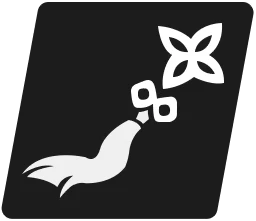
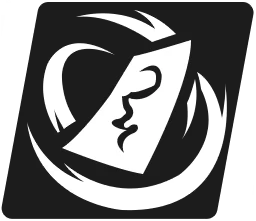
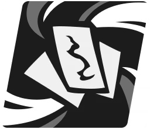
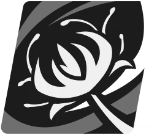
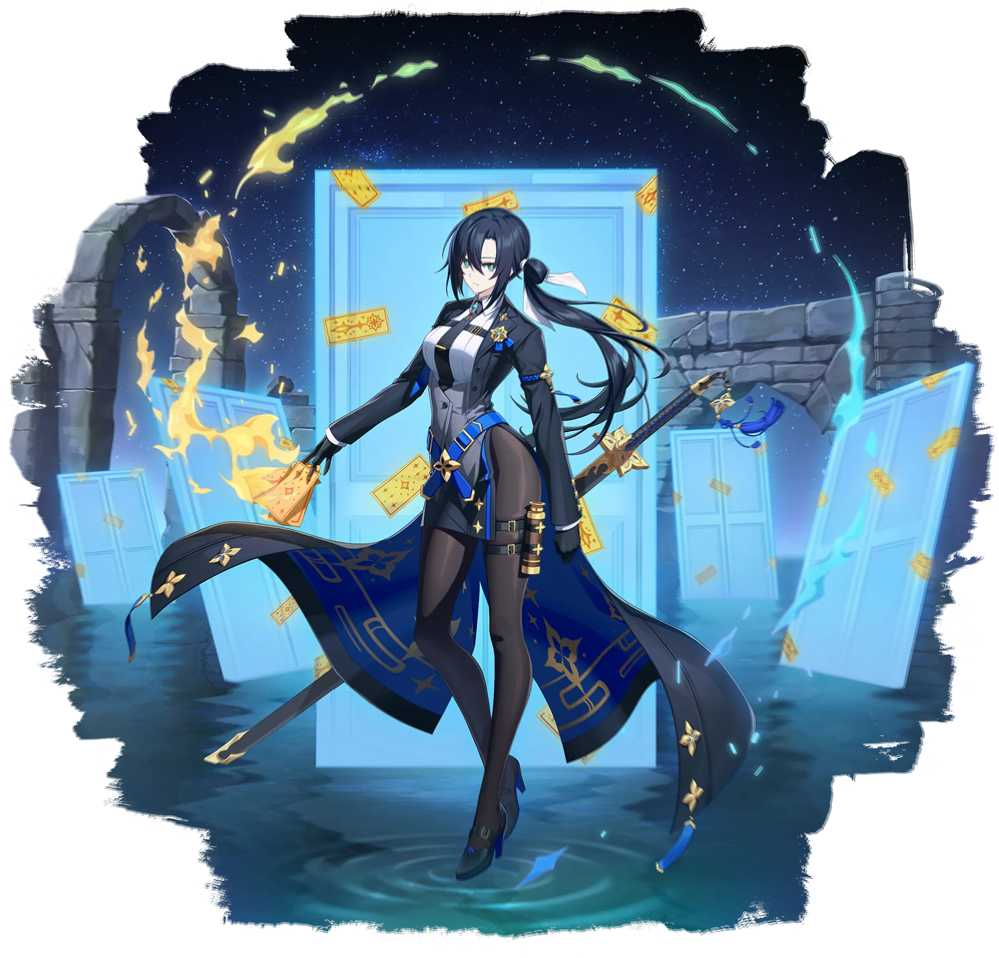

루그
폴라리스 소속 궤도 수색대의 부팀장. 가문 대대로 내려온 특이체질 때문에 고통을 느끼지 못한다. 주위 사람들에게는 철저히 숨기는 취미를 가지고 있다는 소문이.
기본 스테이터스 (Lv.200)
여정 스테이터스
공명 잠재력

루그의 공격력이
 냉각태양 속성 유닛에게 주는 피해량이 1% 증가합니다. 최대 5스택까지 적용됩니다. 부스트 효과는 강화/약화 효과와 무관하게 독립적으로 적용됩니다.
냉각태양 속성 유닛에게 주는 피해량이 1% 증가합니다. 최대 5스택까지 적용됩니다. 부스트 효과는 강화/약화 효과와 무관하게 독립적으로 적용됩니다.| ★0 | 중첩당 행동 게이지 +20% (최대 60%) |
|---|---|
| ★1 | 공격력 +5% · 중첩당 행동 게이지 +20% (최대 60%) |
| ★2 | 공격력 +10% · 중첩당 행동 게이지 +30% (최대 90%) |
| ★3 | 공격력 +15% · 중첩당 행동 게이지 +40% (최대 120%) |

적에게 부적을 날려 공격합니다. 자신에게
냉각태양 속성 유닛에게 주는 피해량이 1% 증가합니다. 최대 5스택까지 적용됩니다. 부스트 효과는 강화/약화 효과와 무관하게 독립적으로 적용됩니다.| 1 | 기본 효과 |
|---|---|
| 2 | 피해량 1% 증가 |
| 3 | 피해량 1% 증가 |
| 4 | 피해량 1% 증가 |
| 5 | 피해량 2% 증가 |
| 6 | 피해량 2% 증가 |
| 7 | 피해량 2% 증가 |
| 8 | 피해량 3% 증가 |
| 9 | 피해량 3% 증가 |
| 10 | 피해량 5% 증가 |

부적으로 냉기를 일으켜 적을 공격합니다. 적에게
| 1 | 기본 효과 |
|---|---|
| 2 | 피해량 1% 증가 |
| 3 | 피해량 1% 증가 |
| 4 | 파사인 발생 확률 10% 증가 |
| 5 | 피해량 1% 증가 |
| 6 | 피해량 2% 증가 · 쿨타임 1턴 감소 |
| 7 | 피해량 2% 증가 |
| 8 | 파사인 발생 확률 15% 증가 |
| 9 | 피해량 3% 증가 |
| 10 | 피해량 5% 증가 |

부적으로 만들어낸 검으로 삿된 것을 베어냅니다. 자신의 턴에 타격 후 적에게
| 1 | 기본 효과 |
|---|---|
| 2 | 피해량 1% 증가 |
| 3 | 피해량 1% 증가 |
| 4 | 방어력 감소 발생 확률 10% 증가 |
| 5 | 피해량 1% 증가 |
| 6 | 피해량 2% 증가 · 쿨타임 1턴 감소 |
| 7 | 피해량 2% 증가 |
| 8 | 방어력 감소 발생 확률 15% 증가 |
| 9 | 피해량 3% 증가 |
| 10 | 피해량 5% 증가 |
